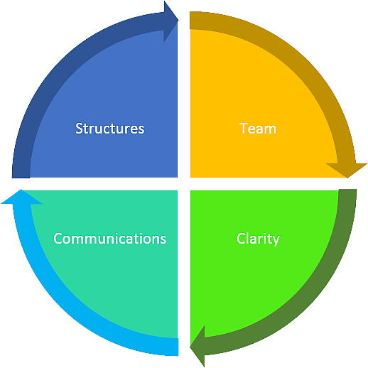

Collection of data will be through surveys and SONA (Situation of National Association)

Analysis of the collected data will be based on:
The Team |
Clarity |
Clarity of the Organization mission, vision and goals: They “Why of the organization”, Organizational behavior and culture and the strategy.
Communications |
Communication of the goals and vision of the organization to the members:
Structures |
Putting in place a structure that will reinforce the vision of the organization: